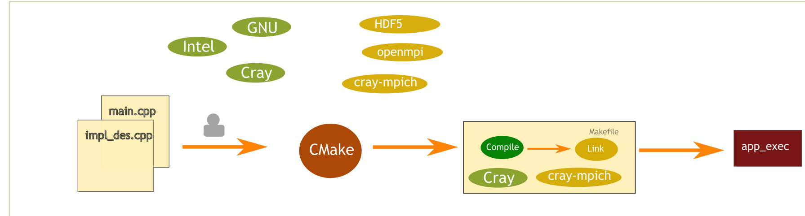

Introduction
CMake is a programming language and a framework designed to simplify the process of building large applications.
The compilation process
When you compile a package you usually want to obtain an executable binary file from a collection of human-readable text files. This process often requires complex steps and some of these also require invoking a compiler and linking with external libraries. These complex instructions can be encoded in a build system. On an UNIX system, a common one is Makefile.
Makefile is able to describe all the steps in the compilation process but is not aware of the user's system configuration. Hence, packages distributed with a plain Makefile often require users to manually specify the location of compilers and libraries, by editing the Makefile or some custom configuration file. This process is time consuming, not standardised and error prone.

How does CMake help ?
CMake automates the processes of defining compilers and libraries on the system. It also automates the process of finding the locations of the packages required by the build process. Once CMake has figured out the configuration of the user system, it generates a build system. Then the user runs the build system in order to generate the executable.

What is CMake ?
- A programming langauge: CMake is a domain specific language to describe the steps necessary to build a software package.
- A build system generator: CMake is not a build system. Instead it generates a build system.
- An abstraction of the build process: As a CMake package developer, you need to specify the source files, the libraries you need to link to and other project properties. CMake is responsible for working out file dependencies and the shell commands required to compile, link and install package binaries on the target system.
Main features of CMake
- Portability: CMake is able to generate a variety of build systems for many platforms (including Linux, Windows and Mac). For Unix systems, Makefile is the default build system.
- Out of source build: intermediary build files are generated in a build directory, separate from the source directory. This prevents polluting the source directory and allows multiple builds from the same source code directory.
Drawbacks of CMake
- Troubleshooting: when configuration fails, issues can be difficult to diagnose and fix.
- Versioning: CMake has changed between different versions and default behaviours have as well. This can make the build succeed with a CMake version but fail with an other version.
- Development practices: good practices in the community have changed over time. Older packages may still use unsafe or deprecated practices.